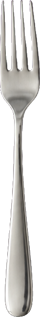
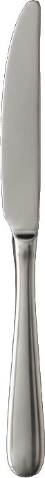
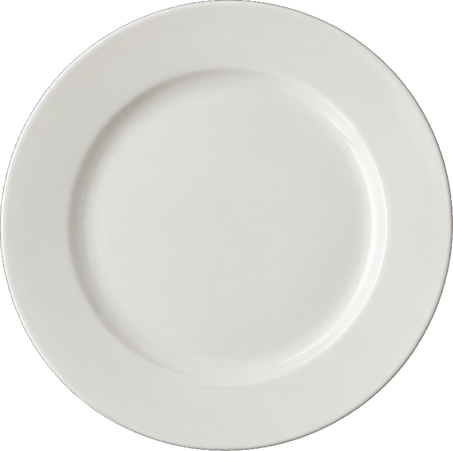
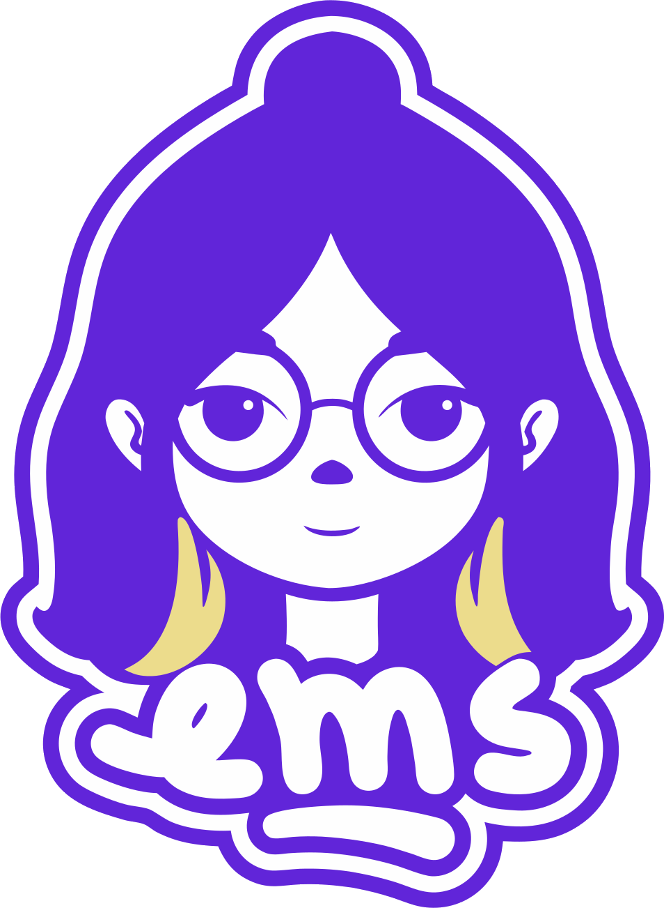

<!doctype html>
<html lang="pt-BR">
<head>
<meta charset="utf-8">
<title>EMS · quilo · lâminas 2 a 5</title>
<!-- v2 (15/11): cada lâmina com composição e matéria próprias, no universo da feira.
     Refs de diagramação (pasta ../referencias): @carolrech (letra gigante, balão, mancha, bilhete no jogo americano),
     @iasminrodriguesdesign (bloquinho de borda ondulada, cartão com borda de selo), @nikaellydesign (texto com tarja).
     A balança só aparece na capa. No máximo um objeto 3D por lâmina, e não em todas. -->
<style>
@font-face{font-family:"Instrument Serif";src:url(fonts/InstrumentSerif-Regular.ttf);font-style:normal}
@font-face{font-family:"Instrument Serif";src:url(fonts/InstrumentSerif-Italic.ttf);font-style:italic}
@font-face{font-family:"Poppins";src:url(fonts/Poppins-Regular.ttf);font-weight:400}
@font-face{font-family:"Poppins";src:url(fonts/Poppins-Medium.ttf);font-weight:500}
@font-face{font-family:"Poppins";src:url(fonts/Poppins-SemiBold.ttf);font-weight:600}
@font-face{font-family:"Anton";src:url(fonts/Anton-Regular.ttf)}
:root{--ivory:#fffbde;--ivory-2:#f4edcb;--tinta:#2a1433;--ameixa:#3d1c46;--plum:#5b216c;--violeta:#6225d8;--violeta-2:#7b4df2;--lavanda:#c0a5c4;--lavanda-2:#e4d6e6;--wine:#9e122c;--pink:#dd34a8;--manteiga:#f2cf7a}
html,body{margin:0;background:#111}*{box-sizing:border-box}
#c{position:relative;width:1080px;height:1350px;overflow:hidden;font-family:Poppins;color:var(--tinta)}
#c>*{position:absolute}
.abs{position:absolute}
.cab{left:90px;right:90px;top:90px;display:flex;justify-content:space-between;font:500 19px/1 Poppins;letter-spacing:.04em}
.serif{font-family:"Instrument Serif";font-weight:400;letter-spacing:-.03em;line-height:.84;white-space:nowrap}
.serif em{font-style:italic}
.anton{font-family:Anton;font-weight:400;line-height:.9;letter-spacing:-.01em;white-space:nowrap;text-transform:uppercase}
.gasto{-webkit-mask-image:var(--mk-gasto);-webkit-mask-size:300px;mask-image:var(--mk-gasto);mask-size:300px}
.acab{inset:0;pointer-events:none}
</style>
</head>
<body>
<div id="c"></div>
<script>
const css=k=>getComputedStyle(document.documentElement).getPropertyValue('--'+k).trim();
const R=document.documentElement.style;
// matérias (mesma técnica do "figurinhas raras")
const ruido=(tam,freq,oct,seed)=>`url("data:image/svg+xml;utf8,<svg xmlns='http://www.w3.org/2000/svg' width='${tam}' height='${tam}'><filter id='f'><feTurbulence type='fractalNoise' baseFrequency='${freq}' numOctaves='${oct}' seed='${seed}' stitchTiles='stitch'/><feColorMatrix type='saturate' values='0'/></filter><rect width='100%' height='100%' filter='url(%23f)'/></svg>")`;
const relevo=(tam,freq,oct,seed,alt,elev=55)=>`url("data:image/svg+xml;utf8,<svg xmlns='http://www.w3.org/2000/svg' width='${tam}' height='${tam}'><filter id='p' color-interpolation-filters='sRGB'><feTurbulence type='fractalNoise' baseFrequency='${freq}' numOctaves='${oct}' seed='${seed}' stitchTiles='stitch'/><feDiffuseLighting lighting-color='white' surfaceScale='${alt}'><feDistantLight azimuth='225' elevation='${elev}'/></feDiffuseLighting></filter><rect width='100%' height='100%' filter='url(%23p)'/></svg>")`;
R.setProperty('--tx-fibra',ruido(520,'0.012 0.35',4,5));
R.setProperty('--tx-relevo',relevo(700,.035,5,3,2.2));
R.setProperty('--tx-fibras',relevo(500,'0.6 0.05',2,8,1.2));
R.setProperty('--tx-acab-papel',relevo(800,.028,5,31,3.2,30));
R.setProperty('--tx-acab-grao',`url("data:image/svg+xml;utf8,<svg xmlns='http://www.w3.org/2000/svg' width='360' height='360'><filter id='g' color-interpolation-filters='sRGB'><feTurbulence type='fractalNoise' baseFrequency='.82' numOctaves='2' seed='21' stitchTiles='stitch'/><feColorMatrix type='saturate' values='0'/><feComponentTransfer><feFuncR type='linear' slope='2.6' intercept='-.8'/><feFuncG type='linear' slope='2.6' intercept='-.8'/><feFuncB type='linear' slope='2.6' intercept='-.8'/></feComponentTransfer></filter><rect width='100%' height='100%' filter='url(%23g)'/></svg>")`);
R.setProperty('--mk-gasto',`url("data:image/svg+xml;utf8,<svg xmlns='http://www.w3.org/2000/svg' width='300' height='300'><filter id='m' color-interpolation-filters='sRGB'><feTurbulence type='fractalNoise' baseFrequency='.55' numOctaves='3' seed='4' stitchTiles='stitch'/><feColorMatrix type='matrix' values='0 0 0 0 1  0 0 0 0 1  0 0 0 0 1  -13 0 0 0 8.6'/></filter><rect width='100%' height='100%' filter='url(%23m)'/></svg>")`);
// estrela em retícula (HalftoneStar)
function estrelaReticula(size,color){const c=document.createElement('canvas');c.width=c.height=size;const g=c.getContext('2d'),cx=size/2,cy=size/2,Rr=size*.49,r=Rr*.45,pts=[];
  for(let i=0;i<10;i++){const a=-Math.PI/2+i*Math.PI/5,rr=i%2?r:Rr;pts.push([cx+rr*Math.cos(a),cy+rr*Math.sin(a)]);}
  const path=new Path2D();pts.forEach((p,i)=>i?path.lineTo(...p):path.moveTo(...p));path.closePath();g.fillStyle=color;const step=size/58;
  for(let y=step/2;y<size;y+=step)for(let x=step/2;x<size;x+=step){if(!g.isPointInPath(path,x,y))continue;const d=Math.hypot(x-cx,y-cy)/Rr,rad=step*.48*(1-d*.82);if(rad>.6){g.beginPath();g.arc(x,y,rad,0,7);g.fill();}}
  return c.toDataURL();}
const cab=cor=>`<div class="cab" style="color:${cor}"><span>@itsemsdesign</span><span>@itsemsdesign</span><span>@itsemsdesign</span></div>`;
const acab=`<div class="acab" style="background-image:var(--tx-acab-papel);background-size:800px;mix-blend-mode:soft-light;opacity:.5"></div><div class="acab" style="background-image:var(--tx-acab-grao);background-size:540px;mix-blend-mode:overlay;opacity:.3"></div>`;
const clipe=(x,y,r)=>`<svg class="abs" style="left:${x}px;top:${y}px;width:40px;transform:rotate(${r}deg);filter:drop-shadow(1px 4px 3px rgba(42,20,51,.35));z-index:3" viewBox="0 0 46 130"><defs><linearGradient id="cl" x1="0" x2="1"><stop offset="0" stop-color="#8f8a97"/><stop offset=".45" stop-color="#f4f1f7"/><stop offset="1" stop-color="#7f7987"/></linearGradient></defs><path d="M14 34 V104 a9 9 0 0 0 18 0 V18 a14 14 0 0 0 -28 0 V108 a19 19 0 0 0 38 0 V34" fill="none" stroke="url(#cl)" stroke-width="4.4" stroke-linecap="round"/></svg>`;
const fita=(x,y,r,w=170)=>`<div class="abs" style="left:${x}px;top:${y}px;width:${w}px;height:50px;background:rgba(228,214,230,.66);transform:rotate(${r}deg);box-shadow:0 2px 3px rgba(42,20,51,.14);-webkit-mask-image:linear-gradient(90deg,transparent 0,#000 6px,#000 calc(100% - 6px),transparent 100%);z-index:3"></div>`;
const P='cenas/pecas/';

/* estrela chapada da marca (i-estrela), usada como adesivo */
const ESTRELA='M0,-1 L0.24,-0.33 L0.95,-0.31 L0.39,0.13 L0.59,0.81 L0,0.41 L-0.59,0.81 L-0.39,0.13 L-0.95,-0.31 L-0.24,-0.33Z';
let ne=0;
const estrela=(x,y,tam,r=0)=>{const id='ge'+(ne++);return `<svg class="abs" style="left:${x}px;top:${y}px;width:${tam}px;height:${tam}px;transform:rotate(${r}deg);filter:drop-shadow(3px 5px 0 rgba(42,20,51,.3))" viewBox="-1.1 -1.1 2.2 2.2"><defs><radialGradient id="${id}" cx=".38" cy=".3" r=".8"><stop offset="0" stop-color="#fff6c9"/><stop offset=".55" stop-color="${css('manteiga')}"/><stop offset="1" stop-color="#d9a94a"/></radialGradient></defs><path d="${ESTRELA}" fill="url(#${id})" stroke="#c99a3e" stroke-width=".05" stroke-linejoin="round"/></svg>`};
/* explosão de oferta (adesivo de preço de mercado) */
const explosao=(x,y,tam,r,cor,html)=>{const pts=[];for(let i=0;i<28;i++){const a=i*Math.PI/14,rr=i%2?.82:1;pts.push((50+50*rr*Math.cos(a)).toFixed(2)+'% '+(50+50*rr*Math.sin(a)).toFixed(2)+'%');}
  return `<div class="abs" style="left:${x}px;top:${y}px;width:${tam}px;height:${tam}px;transform:rotate(${r}deg);filter:drop-shadow(5px 7px 0 rgba(42,20,51,.35));z-index:4"><div style="width:100%;height:100%;background:${cor};clip-path:polygon(${pts.join(',')});display:flex;align-items:center;justify-content:center;text-align:center">${html}</div></div>`};

const F='cenas/fotos/';
const foto=(nome,x,y,w,r)=>``;
/* peça 3D pequena, apoiada (sombra de contato embaixo) */
const peca=(nome,w,r=0,extra='')=>``;
/* prato desenhado, visto de cima em ângulo: aro, fundo e sombra */
const prato=(x,y,w)=>`<div class="abs" style="left:${x+w*.04}px;top:${y+w*.2}px;width:${w*.92}px;height:${w*.2}px;border-radius:50%;background:rgba(30,8,60,.5);filter:blur(16px)"></div>
  <div class="abs" style="left:${x}px;top:${y}px;width:${w}px;height:${w*.34}px;border-radius:50%;background:radial-gradient(ellipse at 50% 42%,#fffdf0 0,#f4edcb 58%,#d8cda6 100%);box-shadow:inset 0 -8px 14px rgba(42,20,51,.16)"></div>
  <div class="abs" style="left:${x+w*.13}px;top:${y+w*.055}px;width:${w*.74}px;height:${w*.2}px;border-radius:50%;background:radial-gradient(ellipse at 50% 40%,#f1e9c6 0,#fffbde 80%);box-shadow:inset 0 6px 10px rgba(42,20,51,.14)"></div>`;

const L={
/* 02 · a pergunta — cartaz de oferta de feira colado com fita; as uvas e as ameixas são a banca (a fruta só entra aqui, onde faz sentido).
   O conteúdo do cartaz é uma coluna centrada, com a mesma folga em cima e embaixo, e cabe dentro da moldura. */
2:()=>`<div class="abs" style="inset:0;background:var(--lavanda-2)"></div>
  
  
  <div class="abs" style="inset:0;background-image:var(--tx-fibra);background-size:520px;mix-blend-mode:multiply;opacity:.26"></div>
  ${cab(css('tinta'))}
  <div class="abs" data-bloco style="left:130px;top:210px;width:820px;height:720px;transform:rotate(-2.5deg);filter:drop-shadow(0 20px 24px rgba(42,20,51,.3))">
    <div class="abs" style="inset:0;background:var(--manteiga)"><div class="abs" style="inset:0;background-image:var(--tx-relevo);background-size:620px;mix-blend-mode:multiply;opacity:.4"></div></div>
    <div class="abs" style="inset:24px;border:5px solid var(--tinta)"></div>
    <div class="abs" data-miolo style="inset:24px;display:flex;flex-direction:column;align-items:center;justify-content:center;text-align:center">
      <div data-centro style="font:600 22px/1 Poppins;letter-spacing:.12em;text-transform:uppercase;color:var(--wine);white-space:nowrap">a pergunta que eu mais recebo</div>
      <div class="serif" data-centro style="font-size:150px;line-height:.9;color:var(--tinta);margin-top:22px"><em>quanto custa</em></div>
      <div class="anton gasto" data-centro style="font-size:176px;line-height:1;color:var(--violeta);margin-top:6px">um logo?</div>
      <div data-centro style="font:500 34px/1.22 Poppins;color:var(--tinta);margin-top:26px">nenhuma marca leva<br>as mesmas coisas.</div>
    </div>
  </div>
  ${fita(455,188,2)}
  ${explosao(676,806,300,10,css('pink'),`<span style="font:400 54px/.92 Anton;text-transform:uppercase;color:var(--ivory)">depende<br>do prato</span>`)}
  ${foto('uvas',74,770,290,-14)}${foto('ameixas',300,972,290,8)}`,

/* 03 · a lista — bloquinho de borda ondulada com clipe sobre toalha xadrez. O papel fica no meio da lâmina e o miolo é uma coluna
   centrada, com a mesma folga em cima e embaixo. Cada item traz a sua peça ao lado: a imagem é o próprio assunto. */
3:()=>{const itens=[['a letra','a fonte que fala<br>do jeito da marca.',peca('A',92)+peca('a-min',70,0,'margin-left:-14px')],
    ['a cor','paleta com motivo,<br>não cor bonita solta.',[1,2,3,4].map((k,i)=>peca('amostra'+k,38,-16+11*i,i?'margin-left:-6px':'')).join('')],
    ['o uso','site, rede social, embalagem:<br>onde ela vai viver.',peca('cursor',104)],
    ['o detalhe','o grafismo que faz<br>reconhecer sem o nome.',peca('estrela',98)]];
  return `<div class="abs" style="inset:0;background:var(--ameixa)"></div>
  <div class="abs" style="inset:0;background-image:linear-gradient(rgba(123,77,242,.16) 50%,transparent 50%),linear-gradient(90deg,rgba(123,77,242,.16) 50%,transparent 50%);background-size:150px 150px"></div>
  <div class="abs" style="inset:0;background-image:var(--tx-fibras);background-size:420px;mix-blend-mode:soft-light;opacity:.7"></div>
  ${cab(css('lavanda-2'))}
  <div class="abs" data-bloco style="left:140px;top:168px;width:800px;height:1070px;transform:rotate(-1.5deg);filter:drop-shadow(0 22px 26px rgba(20,6,26,.5))">
    <div class="abs" style="inset:0;background:var(--ivory);-webkit-mask:radial-gradient(circle 20px at 20px 0,transparent 98%,#000) -20px 0/40px 100%;mask:radial-gradient(circle 20px at 20px 0,transparent 98%,#000) -20px 0/40px 100%">
      <div class="abs" style="inset:0;background-image:var(--tx-relevo);background-size:620px;mix-blend-mode:multiply;opacity:.34"></div></div>
    <div class="abs" data-miolo style="inset:20px 0 0 0;display:flex;flex-direction:column;align-items:center;justify-content:center">
      <div data-centro style="font:500 21px/1 Poppins;letter-spacing:.2em;text-transform:uppercase;color:var(--wine);text-align:center">lista da feira</div>
      <div class="serif" data-centro style="font-size:118px;color:var(--tinta);text-align:center;margin-top:14px">o que entra<br>no <em style="color:var(--pink)">prato</em></div>
      <div style="width:640px;margin-top:26px">
        ${itens.map(([n,t,img],i)=>`<div style="display:flex;gap:24px;align-items:center;padding:16px 0 18px;border-top:3px dotted rgba(42,20,51,.45)">
          <span style="flex:none;width:44px;height:44px;border:4px solid var(--tinta);border-radius:10px;position:relative;align-self:flex-start;margin-top:14px">${i<3?`<svg style="position:absolute;left:-4px;top:-16px" width="62" height="58" viewBox="0 0 64 60"><path d="M8 30 L24 46 L58 6" fill="none" stroke="${css('pink')}" stroke-width="9" stroke-linecap="round" stroke-linejoin="round"/></svg>`:''}</span>
          <span style="flex:1"><span class="serif" style="display:block;font-size:74px;line-height:.86;color:var(--tinta)">${n}</span><span style="display:block;font:400 26px/1.24 Poppins;color:var(--tinta);margin-top:8px">${t}</span></span>
          <span style="flex:none;width:150px;display:flex;align-items:center;justify-content:center">${img}</span></div>`).join('')}
        <div style="border-top:3px dotted rgba(42,20,51,.45)"></div>
      </div>
    </div>
  </div>
  ${clipe(520,120,4)}`},

/* 04 · a virada — a frase servida dentro do prato: prato de louça de verdade visto de cima, garfo e faca, sobre toalha xadrez
   (ref @carolrech, a lâmina do círculo com caixa-alta). Escolhida pela Emi em 15/11 entre três opções; as outras duas estão em entrega/quilo/opcoes-slide4.
   O prato tem respiro em volta; o texto é uma coluna centrada no meio exato do prato. */
4:()=>`<div class="abs" style="inset:0;background:radial-gradient(ellipse 90% 70% at 50% 45%,#7b4df2 0,#6225d8 55%,#4a1a9e 100%)"></div>
  <div class="abs" style="inset:0;background-image:linear-gradient(rgba(42,20,51,.16) 50%,transparent 50%),linear-gradient(90deg,rgba(42,20,51,.16) 50%,transparent 50%);background-size:180px 180px"></div>
  <div class="abs" style="inset:0;background-image:var(--tx-fibras);background-size:420px;mix-blend-mode:soft-light;opacity:.7"></div>
  ${cab(css('ivory'))}
  
  
  
  <div class="abs" data-bloco data-miolo style="left:300px;top:404px;width:480px;height:480px;display:flex;flex-direction:column;align-items:center;justify-content:center;text-align:center;color:var(--tinta)">
    <div data-centro style="font:500 27px/1.18 Poppins">quanto mais coisa<br>vai no prato,</div>
    <div class="anton gasto" data-centro style="font-size:132px;line-height:1.06;margin-top:6px">mais</div>
    <div class="serif" data-centro style="font-size:150px;line-height:1;margin-top:-26px;color:var(--pink)"><em>pesa.</em></div>
  </div>
  <div class="abs" data-bloco style="left:215px;top:1090px;width:650px;background:var(--ivory);color:var(--tinta);border-radius:999px;padding:24px 20px 26px;text-align:center;font:600 32px/1 Poppins;transform:rotate(-2deg);box-shadow:6px 7px 0 rgba(42,20,51,.6)"><span data-centro>orçamento de marca não é tabela.</span></div>`,

/* 05 · a chamada — a conversa de dm já começada: o selo da Emi de avatar, a pergunta dela, a resposta pronta da pessoa e o cursor no botão de enviar.
   O objetivo é a pessoa pedir orçamento. Elementos da marca: selo (inteiro, reto, sem recolorir), chip "disponível", cursor. */
5:()=>`<div class="abs" style="inset:0;background:var(--ivory)"></div>
  
  
  <div class="abs" style="inset:0;background-image:var(--tx-fibra);background-size:520px;mix-blend-mode:multiply;opacity:.3"></div>
  ${cab(css('tinta'))}
  <div class="abs serif gasto" data-centro style="left:0;right:0;top:166px;text-align:center;font-size:188px;line-height:.82;color:var(--tinta)">quer saber<br>quanto pesa<br>a <em style="color:var(--pink)">sua?</em></div>
  <div class="abs" data-bloco style="left:140px;top:660px;width:800px;background:var(--lavanda-2);border:5px solid var(--tinta);border-radius:44px;box-shadow:10px 11px 0 var(--tinta);transform:rotate(-1.5deg);overflow:hidden">
    <div style="display:flex;align-items:center;gap:18px;padding:20px 30px;background:var(--ivory);border-bottom:5px solid var(--tinta)">
      
      <span style="font:600 32px/1 Poppins;color:var(--tinta)">@itsemsdesign</span>
      <span style="margin-left:auto;display:inline-flex;align-items:center;gap:10px;font:500 20px/1 Poppins;color:var(--tinta);border:3px solid var(--tinta);border-radius:999px;padding:9px 16px"><i style="width:10px;height:10px;border-radius:50%;background:#7cf29c;box-shadow:0 0 0 2px var(--tinta)"></i>dm aberta</span>
    </div>
    <div style="padding:30px 30px 26px;display:flex;flex-direction:column;gap:20px">
      <div style="align-self:flex-start;background:var(--ivory);color:var(--tinta);border:4px solid var(--tinta);border-radius:30px 30px 30px 8px;padding:18px 26px 20px;font:500 31px/1.22 Poppins">me conta o que vai<br>no prato da sua marca?</div>
      <div style="align-self:flex-end;background:var(--violeta);color:var(--ivory);border:4px solid var(--tinta);border-radius:30px 30px 8px 30px;padding:20px 30px 22px;font:600 46px/1.08 Poppins">quero<br>um orçamento</div>
      <div style="display:flex;align-items:center;gap:16px;margin-top:6px">
        <span style="flex:1;background:var(--ivory);border:4px solid var(--tinta);border-radius:999px;padding:18px 28px;font:400 27px/1 Poppins;color:rgba(42,20,51,.55)">mensagem...</span>
        <span style="width:74px;height:74px;border-radius:50%;background:var(--pink);border:4px solid var(--tinta);display:flex;align-items:center;justify-content:center"><svg width="34" height="34" viewBox="0 0 24 24"><path d="M4 12 H19 M13 5 L20 12 L13 19" fill="none" stroke="${css('ivory')}" stroke-width="3.2" stroke-linecap="round" stroke-linejoin="round"/></svg></span>
      </div>
    </div>
  </div>
  `,
};
const n=new URLSearchParams(location.search).get('n')||'2';
document.getElementById('c').innerHTML=L[n]()+acab;
</script>
</body>
</html>
